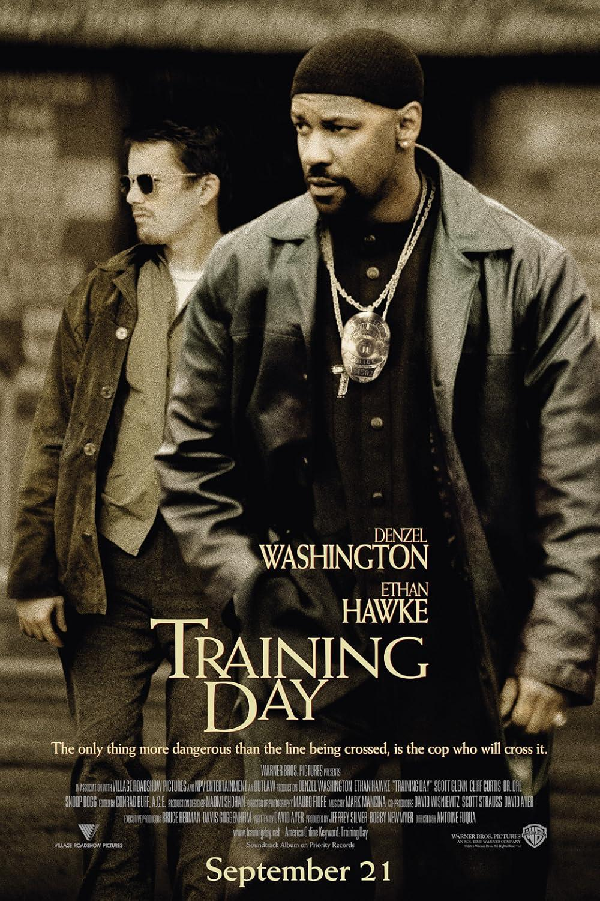

Released in 2001, this film was and still is a hood-classic film.
It was gritty crime drama that showcased the dark corrupt side of the L.A. Police force.
Denzel Washington delivered a powerful multi-layered performance that finally won him Best Actor after years of critical acclaim.
Just like the other films on this list, Training Day is a masterpiece of cinema.
The film follows the story of a rookie cop who is assigned to a day of training with a corrupt detective in Los Angeles.
The film explores themes of morality, corruption, and the blurred lines between right and wrong.
Overall, "Training Day" is a must-watch for any film enthusiast.